Lab1_Modeling_Concepts
Instroduction
Verilog HDL modeling language supports three kinds of modeling styles: gate-level, dataflow, and behavioral. The gate-level and datafow modeling are used to model combinatorial circuits whereas the behavioral modeling is used for both combinatorial and sequential circuits.
IMPORTANT If you are not familiar with Verilog, HDLBits link is an excellent resource to complete before this practice. It is a collection of small circuit design exercises for practicing digital hardware design using Verilog Hardware Description Language (HDL). The earlier problems follow a tutorial style, while the later problems will increasingly challenge your circuit design skills. Each problem requires you to design a small circuit in Verilog, and HDLBits provides immediate feedback on the circuit module you submit to check for correctness.
Gate-level Modeling
Verilog HDL supports built-in primitive gates modeling. The gates supported are multiple-input, multiple-output, tristate, and pull gates. The multiple-input gates supported are: and, nand, or, nor, xor, and xnor whose number of inputs is two or more and has only one output. The multiple-output gates supported are buf and not, whose output number is one or more and has only one input. The language also supports modeling of tri-state gates which include bufif0, bufif1, notif0, and notif1. These gates have one input, one control signal, and one output. The pull gates are pullup and pulldown with a single output (no input) only.
The basic syntax for each type of gate with zero delays is as follows: and | nand | or | nor | xor | xnor [instance name] (out, in1, …, inN); // [] is optional and | is selection buf | not [instance name] (out1, out2, …, out2, input); bufif0 | bufif1 | notif0 | notif1 [instance name] (outputA, inputB, controlC); pullup | pulldown [instance name] (output A);
One can also have multiple instances of the same type of gate in one construct separated by a comma such as and [inst1] (out11, in11, in12), [inst2] (out21, in21, in22, in23), [inst3] (out31, in31, in32, in33); The language also allows the delays to be expressed when instantiating gates. The delay expressed is from input to output. The delays can be expressed in the form of rise, fall, and turn-off delays; one, two, or all three types of delays can be expressed in a given instance expression. The turn-off delay applies to gates whose output can be turned OFF(.e.g. notif1).
For example,
and #5 A1(Out, in1, in2); // the rise and fall delays are 5 units
and #(2,5) A2(out2, in1, in2); // the rise delay is 2 units and the fall delay is five units
notif1 #(2, 5, 4) A3(out3, in2, ctrl1); //the rise delay is 2, the fall delay is 5, and the turnoff delay is 4 unit
Gate-level modeling is useful when a circuit is a simple combination, such as a multiplexer. A multiplexer is a simple circuit which connects one of many inputs to an output. In this part, you will create a simple 2-to-1 multiplexer and extend the design to multiple bits. Here is some useful link for using the vivado and install vivado.
Part 1-1-1
Create and add the Verilog module with three inputs (x, y, s) and one output (m) using gate-level modeling.
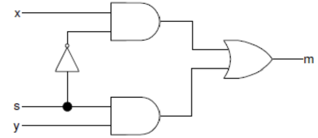
Hint: Click the Green Plus button on the Add Sources on the New Project window. Then Click Create File. Name the file lab1_1_1, click OK.
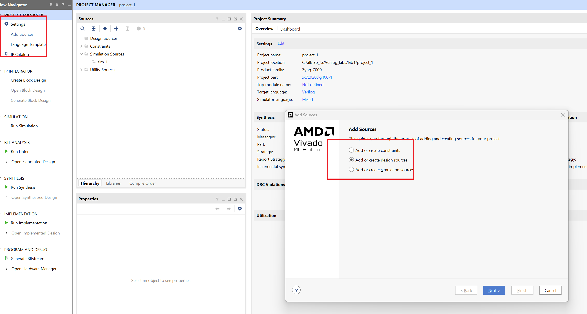
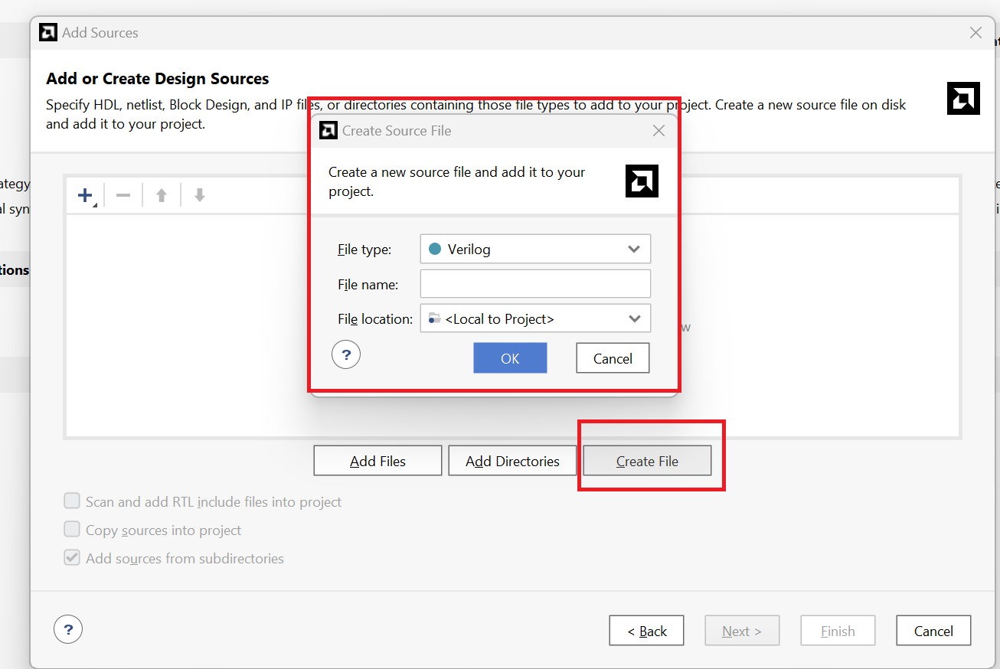
lab1_1_1.v
// Define the module with inputs x, y, s and output m.
module multiplexer_2to1(
input x, // First input of the multiplexer
input y, // Second input of the multiplexer
input s, // Select signal for the multiplexer
output m // Output of the multiplexer
);
// Intermediate wires for the gate-level implementation.
wire not_s;
wire x_and_not_s;
wire y_and_s;
// Gate-level modeling of the multiplexer
not u1(not_s, s); // Invert the select signal
and u2(x_and_not_s, x, not_s); // AND gate for x and the inverted select signal
and u3(y_and_s, y, s); // AND gate for y and the select signal
or u4(m, x_and_not_s, y_and_s); // OR gate to produce the final output
endmodule
Now we can see the Schematic under the RTL ANALYSIS part like below:
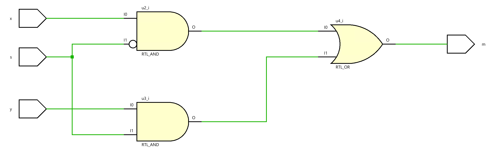
Then we can click on the Run synthesis under SYNTHESIS and Run implementation under IMPLEMENTATION. We should add the appropriate board-related master XDC file to the project and edit it to include the related pins. Assign x to L20, y to D20, and the s to L19 and m to R14 according to the pin layout of the PYNQ_Z2 as shown below.

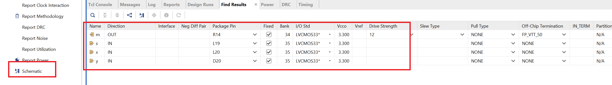
Click on the Generate Bitstream under the PROGRAM AND DEBUG, and when writing bitstream is complete, we can download the file to the board and verify the lab. Here, you have two ways.
First, you can click on the Open Hardware Manager under the PROGRAM AND DEBUG and click on the Open Target to auto-connect to your board. But you need to connect your board to your computer using the USB cable. Then you will the green words like below:
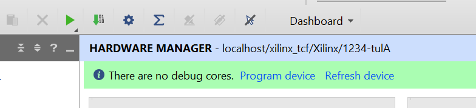
We don’t need to debug, we just need to Program device like below:
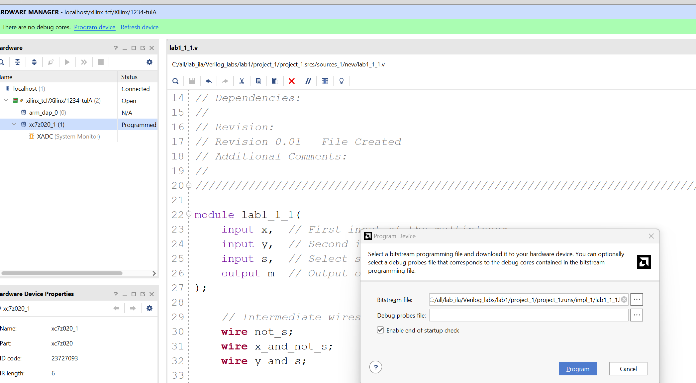
Then you can press the button on the board and you can see the LED is on like below:
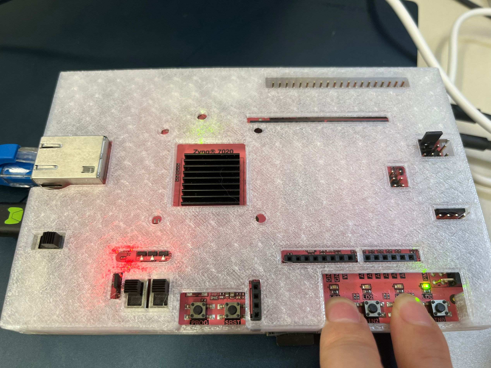
The second way that you can refer to the Soc_labs
Part 1-1-2
Create a two-bit wide 2-to-1 multiplexer using gate-level modeling. Create and add the Verilog module with two 2-bit inputs (x[1:0], y[1:0]), a one-bit select input (s), and two-bit output (m[1:0]) using gate-level modeling.
lab1_1_2.v
// Define the module with 2-bit inputs x, y, single-bit select input s, and 2-bit output m.
module lab1_1_2(
input [1:0] x, // First 2-bit input
input [1:0] y, // Second 2-bit input
input s, // Select signal
output [1:0] m // 2-bit output
);
// Intermediate wires for the gate-level implementation of each bit.
wire not_s;
wire [1:0] x_and_not_s;
wire [1:0] y_and_s;
// Invert the selected signal for use with both bits
not u0(not_s, s);
// Implementing the 2-to-1 MUX for the least significant bit (LSB)
and u1(x_and_not_s[0], x[0], not_s); // AND gate for x[0] and inverted select
and u2(y_and_s[0], y[0], s); // AND gate for y[0] and select
or u3(m[0], x_and_not_s[0], y_and_s[0]); // OR gate for the LSB
// Implementing the 2-to-1 MUX for the most significant bit (MSB)
and u4(x_and_not_s[1], x[1], not_s); // AND gate for x[1] and inverted select
and u5(y_and_s[1], y[1], s); // AND gate for y[1] and select
or u6(m[1], x_and_not_s[1], y_and_s[1]); // OR gate for the MSB
endmodule
Now we can see the Schematic under the RTL ANALYSIS part like below:
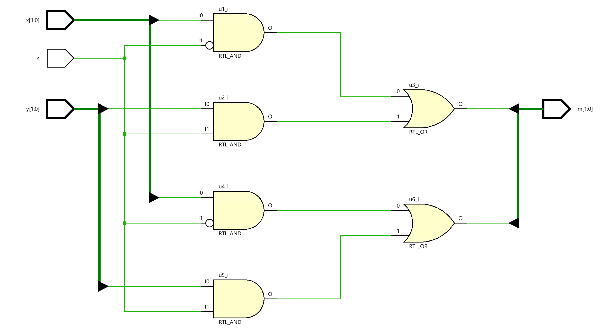
Dataflow Modeling
Dataflow modeling style is mainly used to describe combinational circuits. The basic mechanism used is the continuous assignment. In a continuous assignment, a value is assigned to a data type called net. The syntax of a continuous assignment is
assign [delay] LHS_net = RHS_expression;
Where LHS_net is a destination net of one or more bits, and RHS_expression is an expression consisting of various operators. The statement is evaluated at any time any of the source operand value changes and the result is assigned to the destination net after the delay unit. The gate-level modeling examples listed in Part 1 can be described in dataflow modeling using the continuous assignment. For example,
assign out1 = in1 & in2; // perform and function on in1 and in2 and assign the result to out1
assign out2 = not in1;
assign #2 z[0] = ~(ABAR & BBAR & EN); // perform the desired function and assign the result
after two units
The target in the continuous assignment expression can be one of the following:
- A scalar net (e.g. 1st and 2nd examples above)
- Vector net
- Constant bit-select of a vector (e.g. 3rd example above)
- Constant part-select of a vector
- Concatenation of any of the above
Let us take another set of examples in which scalar and vector nets are declared and used
wire COUNT, CIN; // scalar net declaration
wire [3:0] SUM, A, B; // vector nets declaration
assign {COUT,SUM} = A + B + CIN; // A and B vectors are added with CIN, and the result is
// assigned to a concatenated vector of a scalar and vector nets
Part 1-2-1
Create and add the Verilog module with 8 inputs (x_in) and 8 outputs (y_out) using dataflow modeling.
lab1_2_1.v
module lab1_2_1(
input wire [7:0] x_in,
output wire [7:0] y_out
);
assign y_out = x_in;
endmodule
Paet 1-2-2
Model a two-bit wide 2-to-1 multiplexer using dataflow modeling with net delays of 3 ns.
lab1_2_2.v
module lab1_2_2(
input s,
input [1:0] x,
input [1:0] y,
output [1:0] m
);
assign #3 m[0] = (x[0] & ~s) | (y[0] &s);
assign #3 m[1] = (x[1] & ~s) | (y[1] &s);
endmodule
Behavioral Modeling
Behavioral modeling is used to describe complex circuits. It is primarily used to model sequential circuits, but can also be used to model pure combinatorial circuits. The mechanisms (statements) for modeling the the behavior of a design are:
initial Statements
always Statements
A module may contain an arbitrary number of initial or always statements and may contain one or more procedural statements within them. They are executed concurrently (i.e. to model parallelism such that the order in which statements appear in the model does not matter) with respect to each other whereas the procedural statements are executed sequentially (i.e. the order in which they appear does matter). Both initial and always statements are executed at time=0 and then only always statements are executed during the rest of the time. The syntax is as follows:
initial [timing_control] procedural_statements;
always [timing_control] procedural_statements;
where a procedural_statement is one of:
-
procedural assignment
-
conditional_statement
-
case_statement
-
loop_statement
-
wait_statement
The initial statement is non-synthesizable and is normally used in testbenches. The always statement is synthesizable, and the resulting circuit can be a combinatorial or sequential circuit. In order for the model to generate a combinatorial circuit, the always block (i) should not be edge sensitive, (ii) every branch of the conditional statement should define all output, and (iii) every case of the case statement should define all output and must have a default case. More detailed coverage of this topic is covered in Lab 7. The destination (LHS) should be of reg type; either scalar or vector. For example,
reg m; // scalar reg type
reg [7:0] switches; // vector reg type
Here is an example of a 2-to-1 multiplexer model. Note that begin and end statements in this example are redundant. They are included for better readability
always @ (x or y or s)
begin
if(s==0)
m=y;
else
m=x;
end
Part 1-3-1
Create and add the Verilog module with three inputs (x, y, s) and one output (m) using behavioral modeling.
To declare a register, put reg after the declaration of input/output and before the port name.
lab1_3_1.v
// Define the module with inputs x, y, s and output m.
module lab1_3_1(
input x, // First input of the multiplexer
input y, // Second input of the multiplexer
input s, // Select signal for the multiplexer
output reg m // Output of the multiplexer declared as reg since it's driven by always block
);
// Behavioral modeling using always block
always @ (s, x, y) begin
if (s == 1'b0)
m = x; // Assign m to x if select line s is 0
else
m = y; // Assign m to y if select line s is 1
end
endmodule
Part 1-3-2
Create a two-bit wide 2-to-1 multiplexer using behavioral modeling.
lab1_3_2.v
// Define the module lab1_3_2 with inputs s, x, y, and output m.
module lab1_3_2(
input s, // Single-bit select input.
input [1:0] x, // 2-bit input x.
input [1:0] y, // 2-bit input y.
output reg [1:0] m // 2-bit output m, declared as reg for procedural assignment.
);
// Behavioral modeling using an always block.
// This block will evaluate whenever there is a change in s, x, or y.
always @(*) begin
if (s == 1) // If select signal s is high...
m = x; // Assign the value of x to the output m.
else // If select signal s is low...
m = y; // Assign the value of y to the output m.
end
// The output m is determined by the value of the select input s.
// This is a basic example of behavioral modeling in Verilog to describe
// the logic of a 2-bit wide 2-to-1 multiplexer.
endmodule
Now we can see the Schematic under the RTL ANALYSIS part like below:
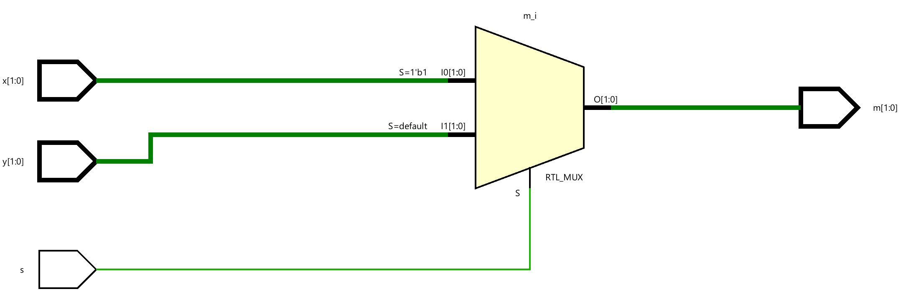
Mixed-design Style Modeling
Complex systems can be described in Verilog HDL using mixed-design style modeling. This modeling style supports hierarchical description. The design can be described using:
-
Build-in gate primitives (gate-level modeling covered in Part 1)
-
Dataflow modeling (covered in Part 2)
-
Behavioral modeling (covered in Part 3)
-
Module instantiation
Combinations of the above.
Interconnections between various objects are done through nets (of type wire). Nets may be scalar or vector. For example.
wire y; // scalar net
wire [3:0] sum; // vector net
In absence of size, the net is assumed to be the scalar type.
As an example of mixed-style modeling, the following diagram shows how one can build a 3-to-1 multiplexer using multiple instances of a 2-to-1 multiplexer. It also shows the symbol and the truth table.
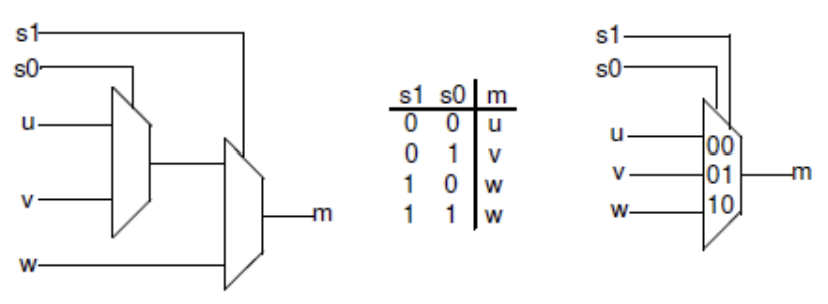
In the above diagram, u, v, and w are data inputs whereas S0, and S1 are select signals, and the output is m. It uses two instances of a 2-to-1 multiplexer.
Part 1-4-1
Create a top-level Verilog module with three data inputs (u, y, w), two select inputs (s0, s1), and one-bit output (m) using the previously defined 2-to-1 multiplexer. You can use any style designed 2-to-1 multiplexer (1-1, 2-1, or 3-1). Wire them up as shown in the above diagram.
lab1_4_1
// Define the module for a 4-to-1 multiplexer.
module lab1_4_1(
input u, // First input of the 4-to-1 multiplexer.
input v, // Second input of the 4-to-1 multiplexer.
input w, // Third input of the 4-to-1 multiplexer.
input s0, // First select the line for the multiplexer.
input s1, // Second select line for the multiplexer.
output m // Output of the 4-to-1 multiplexer.
);
wire temp; // Intermediate wire to hold the output from the first 2-to-1 multiplexer.
// First 2-to-1 multiplexer instance (sel0).
//Select between 'u' and 'v' based on 's0'.
lab1_3_1 sel0(
.s(s0), // Select signal for this 2-to-1 multiplexer.
.x(u), // First input connected to 'u'.
.y(v), // Second input connected to 'v'.
.m(temp) // Output connected to intermediate wire 'temp'.
);
// Second 2-to-1 multiplexer instance (sel1).
//Select between 'temp' and 'w' based on 's1'.
lab1_3_1 sel1(
.s(s1), // Select signal for this 2-to-1 multiplexer.
.x(temp), // First input connected to 'temp' (output of sel0).
.y(w), // Second input connected to 'w'.
.m(m) // Final output of the 4-to-1 multiplexer.
);
endmodule
Now we can see the Schematic under the RTL ANALYSIS part like below:
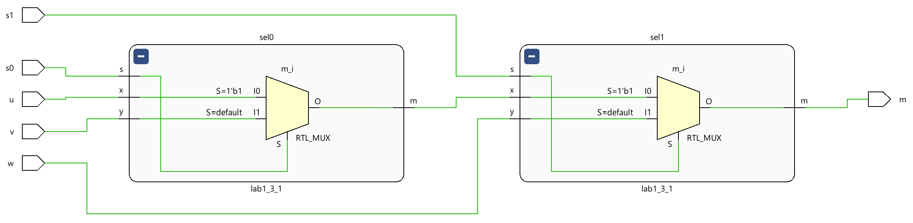
Part 1-4-2
Model a BCD to 7-Segment Decoder. A 7-segment display consists of seven segments, numbered a to g which can be used to display a character. Depending on the input type, a type conversion may be needed. If want to display a binary coded decimal (BCD) using 4-bit input, a BCD to 7-segment decoder is required. The table below shows the bit pattern you need to put to display a digit (note that to turn ON a segment you need to put logic 0 on the segment and the anode of the display needs to be driven logic 0 on this board)
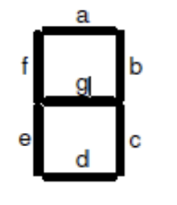
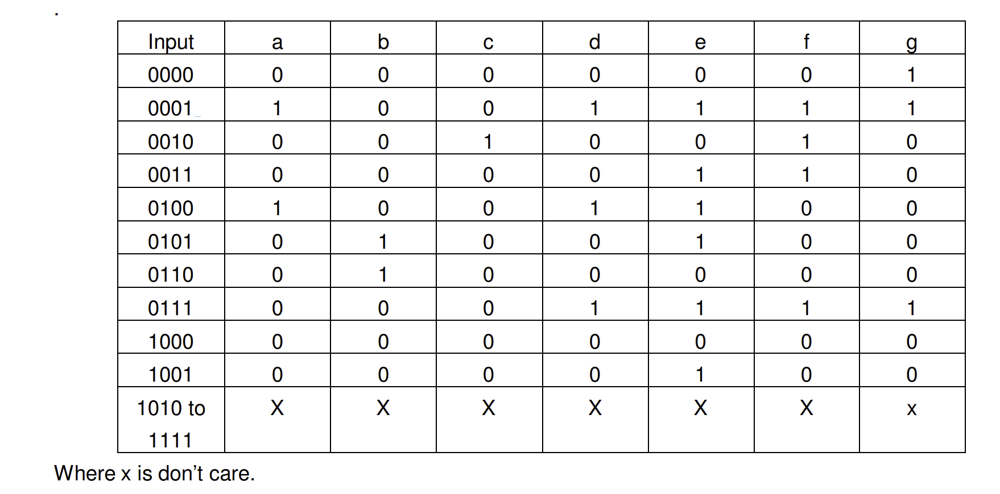
lab1_4_2
module lab1_4_2(
input [3:0] x, // 4-bit binary input to be displayed on the seven-segment display
output [6:0] seg, // Seven-segment display outputs (a-g)
output reg [3:0] an // Four anode signals to control which display is active
);
//Seven-segment decoder expressions
// Each line corresponds to one segment of the seven-segment display.
// These logical expressions determine whether a specific segment should be on or off
// based on the current value of the 4-bit input 'x'.
assign seg[0] = (~x[3] & ~x[2] & ~x[1] & x[0]) | (~x[3] & ~x[2] & x[1] & ~x[0]);
assign seg[1] = (~x[3] & ~x[2] & ~x[1] & ~x[0]) | (~x[3] & ~x[2] & x[1] & x[0]);
assign seg[2] = (x[3] & ~x[2] & ~x[1] & ~x[0]) | (~x[3] & ~x[2] & x[1] & ~x[0]);
assign seg[3] = (~x[3] & x[2] & ~x[1] & ~x[0]) | (~x[3] & ~x[2] & x[1] & ~x[0]);
assign seg[4] = (~x[3] & ~x[2] & ~x[1] & ~x[0]) | (~x[3] & x[2] & ~x[1] & ~x[0]);
assign seg[5] = (~x[3] & ~x[2] & ~x[1] & ~x[0]) | (~x[3] & x[2] & ~x[1] & x[0]);
assign seg[6] = (~x[3] & ~x[2] & ~x[1] & ~x[0]) | (x[3] & ~x[2] & ~x[1] & ~x[0]);
// Enable only the rightmost display
// In this module, 'an' is always set to activate only one specific display.
// The active low signal '4'b0001' means that only the rightmost seven-segment display is turned on.
always @* begin
an = 4'b0001; // Enable only the rightmost display
end
endmodule
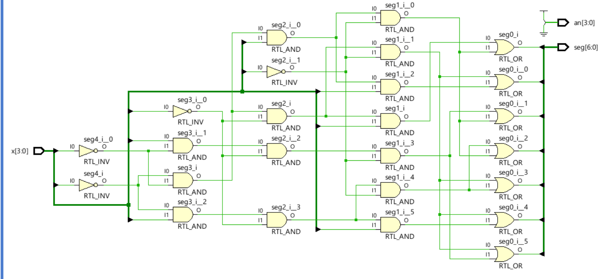